Генератор мощных
импульсов тока (емкостной накопитель энергии)
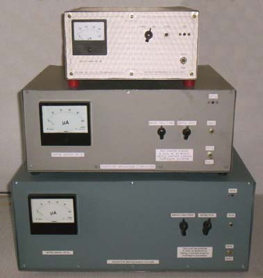
Назначение
Генератор мощных импульсов тока с
емкостным накопителем энергии предназначен для получения мощных одиночных
импульсов тока при апериодическом разряде батареи конденсаторов на
активно-индуктивную нагрузку. При этом к питающей сети переменного тока не
предъявляется высоких требований по мощности (генератор может работать в бытовых
и полевых условиях). Изменяя напряжение заряда конденсаторной батареи, можно
изменять амплитуду импульсов выходного тока. Генератор может использоваться в
составе установок намагничивания и размагничивания [7],
для генерации сильных импульсных магнитных полей [8]
с амплитудой индукции до 20 Тл и более, в устройствах контактной сварки с
использованием импульсного трансформатора тока [2], в
ударных электромагнитных приводах, импульсных источниках света, для
намагничивания магнитных систем исполнительных электродвигателей постоянного
тока и электрогенераторов [5]. Совместно с
преобразователем напряжения =12/~220 В [6] генератор
может применяться для намагничивания магнитов и магнитных систем в полевых
условиях, в частности, электродвигателей радиоуправляемых моделей летательных и
плавательных аппаратов [5]. Разработаны, прошли
испытания и используются на практике различные модификации генераторов с
различной энергией и максимальным напряжением заряда конденсаторной батареи.
Емкостной накопитель с энергией заряда 0.15 (0.18) кДж
и максимальным напряжением заряда 550 (600) В:
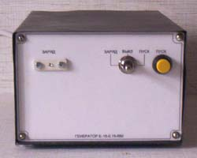
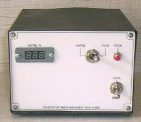
- форма генерируемых импульсов тока - одиночные
однополярные с экспоненциальным фронтом и экспоненциальным спадом
- длительность импульса тока зависит от сопротивления и
индуктивности нагрузки и может составлять от 0.5 до 10 мс и более
- амплитуда импульса тока зависит от сопротивления и
индуктивности нагрузки, максимальная амплитуда импульса тока 500 А при
длительности импульса от 0.5 мс до 10 мс
- вид запуска - ручной однократный
- время полной зарядки конденсаторной батареи 0.15 кДж не
более 60 секунд
- готовность к работе - сразу после включения
- напряжение питающей сети 220 + 10 В
- частота питающей сети 50 + 5 Гц
- средняя потребляемая мощность при частоте следования
импульсов 1 импульс за 1 минуту не более 25 В ∙
А
- время непрерывной работы не ограничено
- габаритные размеры не более 150 х 250 х 110 мм3
- масса не более 2.5 кг
Емкостной накопитель с энергией заряда 0.4 кДж и
максимальным напряжением заряда 900 В:
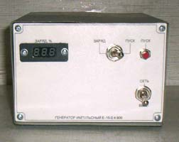
- форма генерируемых импульсов тока - одиночные
однополярные с экспоненциальным фронтом и экспоненциальным спадом
- длительность импульса тока зависит от сопротивления и
индуктивности нагрузки и может составлять от 0.5 до 10 мс и более
- амплитуда импульса тока зависит от сопротивления и
индуктивности нагрузки, максимальная амплитуда импульса тока 1000 А при
длительности импульса от 0.5 мс до 10 мс
- вид запуска - ручной однократный
- время полной зарядки конденсаторной батареи 0.4 кДж не
более 60 секунд
- готовность к работе - сразу после включения
- напряжение питающей сети 220 + 10 В
- частота питающей сети 50 + 5 Гц
- средняя потребляемая мощность при частоте следования
импульсов 1 импульс за 1 минуту не более 30 В ∙
А
- время непрерывной работы не ограничено
- габаритные размеры не более 150 х 250 х 110 мм3
- масса не более 2.5 кг
Емкостной накопитель с энергией заряда 0.5 кДж (1 кДж
при установке дополнительной батареи) и максимальным напряжением заряда 900 В:
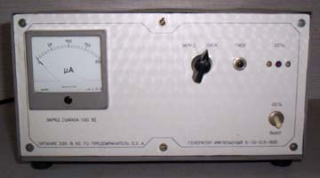
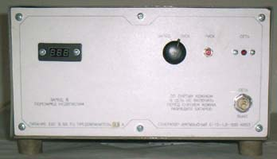
- форма генерируемых импульсов тока - одиночные
однополярные с экспоненциальным фронтом и экспоненциальным спадом
- длительность импульса тока зависит от сопротивления и
индуктивности нагрузки и может составлять от 0.5 до 30 мс и более
- амплитуда импульса тока зависит от сопротивления и
индуктивности нагрузки, максимальная амплитуда импульса тока 10000 А при
длительности импульса 0.5 мс, 2000 А при длительности 10 мс
- вид запуска - ручной однократный
- время полной зарядки конденсаторной батареи 0.5 кДж не
более 60 секунд
- готовность к работе - сразу после включения
- напряжение питающей сети 220 + 10 В
- частота питающей сети 50 + 5 Гц
- средняя потребляемая мощность при частоте следования
импульсов 1 импульс за 1 минуту не более 100 В
∙ А
- время непрерывной работы не ограничено
- габаритные размеры не более (без элементов подключения и
управления) 300 х 360 х 175 мм3
- масса не более 9 кг
Емкостной накопитель с энергией заряда 1 кДж (2 кДж
при установке дополнительной батареи) и максимальным напряжением заряда 500 В:
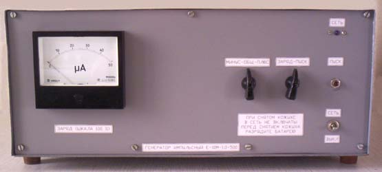
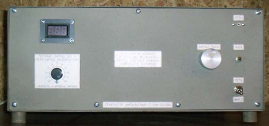
- форма генерируемых импульсов тока - одиночные
однополярные с экспоненциальным фронтом и экспоненциальным спадом
- полярность импульса тока можно изменять посредством
выбора соответствующего выходного разъема
- длительность импульса тока зависит от сопротивления
нагрузки и может составлять от 0.5 до 30 мс и более
- амплитуда импульса тока зависит от сопротивления и
индуктивности нагрузки, максимальная амплитуда импульса тока 10000 А при
длительности импульса 0.5 мс, 2000 А при длительности 10 мс
- вид запуска - ручной однократный
- время полной зарядки конденсаторной батареи 1 кДж не
более 120 секунд
- готовность к работе - сразу после включения
- напряжение питающей сети 220 + 10 В
- частота питающей сети 50 + 5 Гц
- средняя потребляемая мощность при частоте следования
импульсов 1 импульс за 2 минуты не более 150 В
∙ А
- время непрерывной работы не ограничено
- габаритные размеры не более (без элементов подключения и
управления) 500 х 400 х 225 мм3
- масса генератора с батареей 1 кДж не более 23 кг, с
батареей 2 кДж не более 30 кг
Емкостной накопитель с энергией заряда 2 кДж и
максимальным напряжением заряда 900 В:
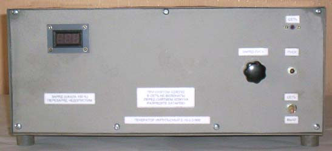
- форма генерируемых импульсов тока - одиночные
однополярные с экспоненциальным фронтом и экспоненциальным спадом
- полярность импульса тока можно изменять посредством
выбора соответствующего выходного разъема
- длительность импульса тока зависит от сопротивления
нагрузки и может составлять от 0.5 до 30 мс и более
- амплитуда импульса тока зависит от сопротивления и
индуктивности нагрузки, максимальная амплитуда импульса тока 10000 А при
длительности импульса 0.5 мс, 3500 А при длительности 10 мс
- вид запуска - ручной однократный
- время полной зарядки конденсаторной батареи 2 кДж не
более 120 секунд
- готовность к работе - сразу после включения
- напряжение питающей сети 220 + 10 В
- частота питающей сети 50 + 5 Гц
- средняя потребляемая мощность при частоте следования
импульсов 1 импульс за 2 минуты не более 200 В
∙ А
- время непрерывной работы не ограничено
- габаритные размеры не более (без элементов подключения и
управления) 500 х 400 х 225 мм3
- масса генератора не более 30 кг
Емкостной накопитель с энергией заряда 4 кДж (до 8 кДж
при установке дополнительных конденсаторов) и максимальным напряжением заряда
900 В:
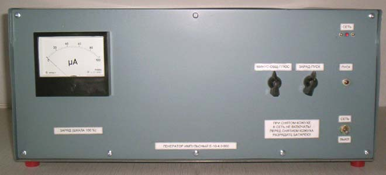
- форма генерируемых импульсов тока - одиночные
однополярные с экспоненциальным фронтом и экспоненциальным спадом
- полярность импульса тока можно изменять посредством
выбора соответствующего выходного разъема
- длительность импульса тока зависит от сопротивления
нагрузки и может составлять от 0.5 до 30 мс и более
- амплитуда импульса тока зависит от сопротивления и
индуктивности нагрузки, максимальная амплитуда импульса тока 20000 А при
длительности импульса 0.5 мс, 5000 А при длительности 10 мс
- вид запуска - ручной однократный
- время полной зарядки конденсаторной батареи 4 кДж не
более 120 секунд
- готовность к работе - сразу после включения
- напряжение питающей сети 220 + 10 В
- частота питающей сети 50 + 5 Гц
- средняя потребляемая мощность при частоте следования
импульсов 1 импульс за 2 минуты не более 250 В
∙ А
- время непрерывной работы не ограничено
- габаритные размеры не более (без элементов подключения и
управления) 600 х 500 х 275 мм3
- масса генератора с батареей 4 кДж не более 32 кг, с
батареей 8 кДж не более 45 кг
Емкостной накопитель с энергией заряда 16 кДж и
максимальным напряжением заряда 1800 В:
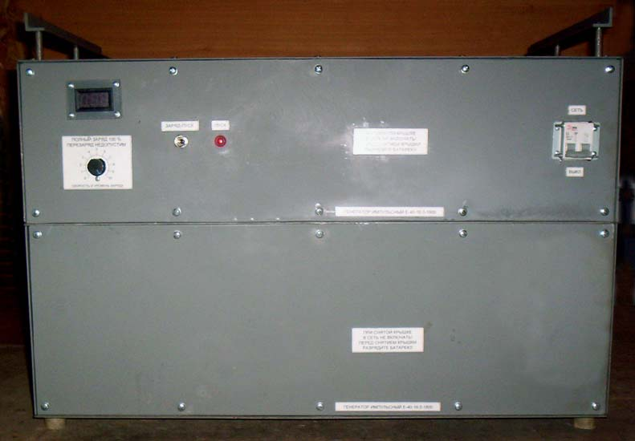
- форма генерируемых импульсов тока - одиночные
однополярные с экспоненциальным фронтом и экспоненциальным спадом
- полярность импульса тока можно изменять посредством
выбора соответствующего выходного разъема
- длительность импульса тока зависит от сопротивления
нагрузки и может составлять от 0.5 до 30 мс и более
- амплитуда импульса тока зависит от сопротивления и
индуктивности нагрузки, максимальная амплитуда импульса тока 20000 А при
длительности импульса 0.5 мс, 5000 А при длительности 10 мс
- вид запуска - ручной однократный
- время полной зарядки конденсаторной батареи 16 кДж не
более 120 секунд
- готовность к работе - сразу после включения
- напряжение питающей сети 220 + 10 В
- частота питающей сети 50 + 5 Гц
- средняя потребляемая мощность при частоте следования
импульсов 1 импульс за 2 минуты не более 350 В
∙ А
- время непрерывной работы не ограничено
- габаритные размеры не более (без элементов подключения и
управления) 750 х 500 х 550 мм3
- масса генератора не более 110 кг
Устройство генератора с емкостным накопителем энергии
Блок-схема генератора мощных импульсов тока (емкостного
накопителя энергии) приведена на рис. 1.
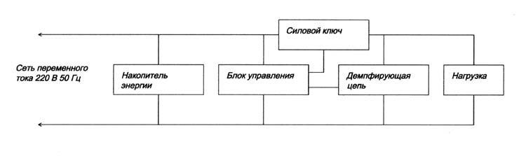
Рис. 1. Блок-схема генератора.
Генератор подключается к сети переменного тока напряжением 220
вольт частотой 50 Гц через силовой разделительный трансформатор. Накопитель
энергии (конденсаторная батарея) заряжается с помощью выпрямителя с балластным
сопротивлением. Подключение нагрузки осуществляется с помощью силового ключа, на
который подается сигнал с блока управления. Для того, чтобы к генератору можно
было подключать индуктивные нагрузки, используется демпфирующая цепь. Для защиты
силового разделительного трансформатора от перегрева при повышенной частоте
заряда-разряда конденсаторной батареи в некоторых модификациях прибора
используется электронный тепловой выключатель [9].
Для расчета амплитуды и длительности импульса тока,
создаваемого емкостным накопителем энергии в активно-индуктивной нагрузке, может
быть использована программа UNI [1].
Желающие приобрести или самостоятельно изготовить емкостной
накопитель энергии могут обратиться за дополнительной информацией к автору (см.
раздел Контактная информация).
Ссылки:
- UNI: Программа расчета
параметров импульса тока в активно-индуктивной нагрузке
- Импульсные трансформаторы тока
для генераторов мощных импульсов тока
- Конденсаторы: Справочник / И. И. Четвертков, М. Н.
Дьяконов, В. И. Присняков и др.: Под ред. И. И. Четверткова, М. Н.
Дьяконова. - М.: Радио и связь, 1993. - 392 с.: ил.
- Накопители энергии: Учеб. пособие для вузов / Д. А. Бут,
Б. Л. Алиевский, С. Р. Мизюрин, П. В. Васюкевич; Под ред. Д. А. Бута. - М.:
Энергоатомиздат, 1991. - 400 с.: ил.
-
Намагничивание
магнитных систем электродвигателей и электрогенераторов на постоянных
магнитах
- Преобразователь
напряжения =12/~220 В 50 Гц 100 Вт
- Установки
импульсного намагничивания и размагничивания постоянных магнитов
- Устройства и
установки для генерации сильных импульсных магнитных полей
-
Электронный тепловой выключатель агрегатов и узлов аппаратуры
Словарь
терминов:
- Амплитуда импульса - максимальное
абсолютное значение величины, конкретизирующей импульс.
- Генератор импульсов - прибор или устройство для
создания последовательности импульсов.
- Длительность импульса - длительность
интервала времени, в течение которого величина, конкретизирующая импульс,
имеет ненулевое значение.
- Импульсный генератор - генератор
импульсов напряжения или тока.
- Магнитное поле - разновидность
электромагнитного поля, создаваемая движущимися электрическими зарядами или
токами и оказывающая силовое воздействие на движущиеся электрические заряды
или токи.
- Намагничивание
- воздействие на образец магнитным полем, вследствие которого у образца
появляется отличная от нуля остаточная намагниченность.
- Размагничивание
- процедура, позволяющая уменьшить остаточную намагниченность образца до
таких значений, когда ею можно пренебречь.
- Электрический конденсатор - система из
двух проводников (обкладок), разделенных слоем диэлектрика.
- Электрогенератор (электрический генератор)
- преобразователь неэлектрической энергии источника в электрическую энергию.
- Электродвигатель (электромотор, электрический
двигатель, электрический мотор) - преобразователь электрической
энергии в механическую энергию движения.
- Электромагнитный привод - привод на
основе электромагнита.
16.03.2004
06.09.2005
20.10.2005
07.04.2007
26.06.2008
06.06.2011
04.07.2011
13.08.2013
27.04.2020
29.03.2022
02.10.2023
31.01.2026
Альтернативные источники
энергии
Компьютеры и
Интернет
Магнитные поля
Механотронные системы
Перспективные
разработки
Электроника и
технология
Главная страница